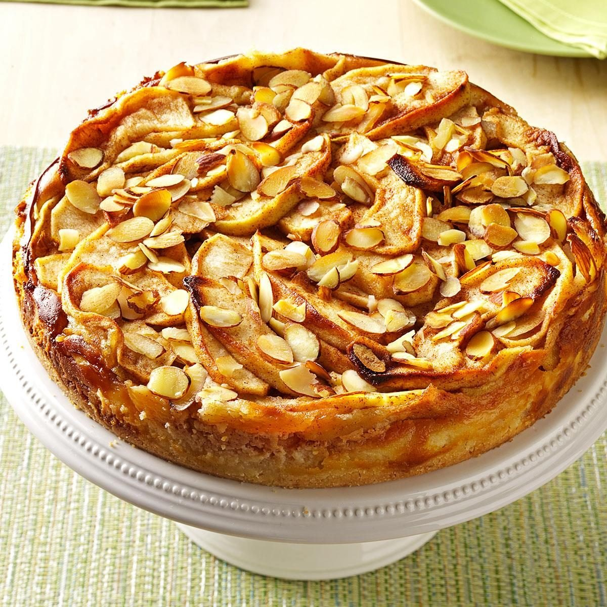

Apple Bavarian Torte (★★★★)
A classic European torte baked in a springform pan. Cream cheese, sliced almonds, and apples make this the perfect holiday treat (12 servings).
INGREDIENTS
- 1/2 cup butter
- 1/3 cup white sugar
- 1/4 teaspoon vanilla extract
- 1 cup all-purpose flour
- 1 (8 ounce) package cream cheese
- 1/4 cup white sugar
- 1 egg
- 1/2 teaspoon vanilla extract
- 6 apples - peeled, cored, and sliced
- 1/3 cup white sugar
- 1/2 teaspoon ground cinnamon
- 1/4 cup sliced almonds
DIRECTIONS
- Preheat oven to 450 degrees F (230 degrees C).
- Cream together butter, sugar, vanilla, and flour.
- Press crust mixture into the bottom of a 9-inch springform pan. Set aside.
- In a medium bowl, blend cream cheese and sugar. Beat in egg and vanilla. Pour cheese mixture over crust.
- Toss apples with sugar and cinnamon. Spread apple mixture over all.
- Bake for 10 minutes. Reduce heat to 400 degrees F (200 degrees C) and continue baking for 25 minutes.
- Sprinkle almonds on top of torte. Continue baking until lightly browned. Cool before removing from pan.
REVIEWS
-
★★★★
I loved the buttery taste of the crust which complements the apples very nicely. – Reviewed on Sep 22, 2010 by DMASON. -
★★★★
Nothing special. I liked the crust, but there was a little too much of it for my taste, and I liked the filling but there was too little of it. I thought the crunchy apples combined with the sliced almonds detracted from the overall flavor. – Reviewed on Sep 1, 2010 by GLENDACHEE. -
★★★★
Excellent! I recommend microwaving the apples for 3 minutes before baking, to soften them. Great dessert – I'll be making it again for the holidays. – Reviewed on Aug 28, 2010 by BBABS.